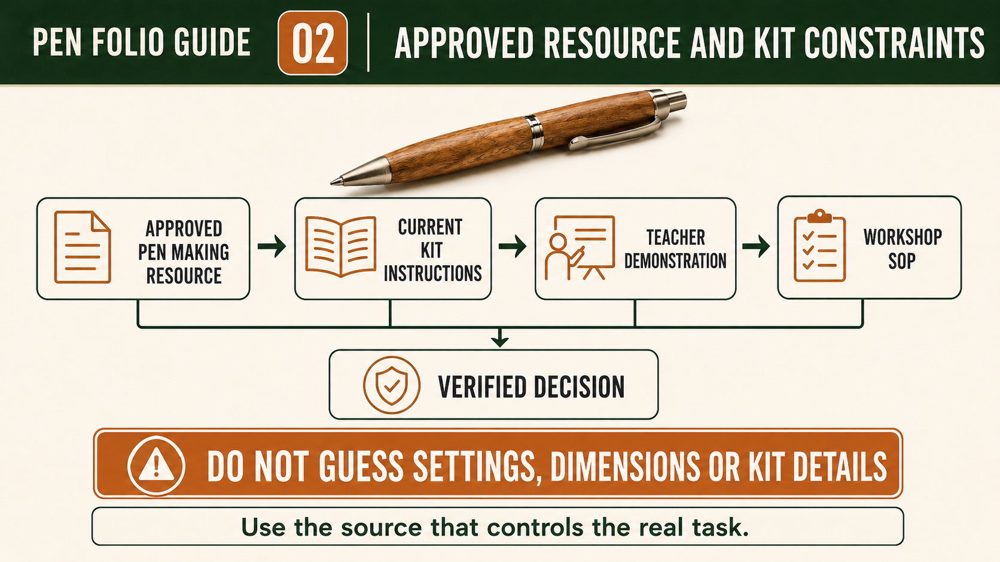

Weeks 1-2
This module
Understand the Pen brief, use the supplied Pen Making resource and manage wood-lathe risk before practical work.
Your work
Student details
Your entries save automatically in this browser. Use Print / Save PDF before leaving the page.
Theory 1
Understanding the Pen project brief and success criteria
The Pen project brief tells you what you are expected to make, how you are expected to work and what evidence you must present. In this project, you will produce a timber pen and a project report. These two outcomes belong together. The pen shows your practical application of knowledge and skills, while the report shows how you planned, made decisions, controlled risks, monitored quality and evaluated the finished work. A strong result is therefore not simply a pen that looks appealing. It is a safely manufactured product supported by clear, honest evidence that explains the process from the first interpretation of the brief through to the final evaluation.
Success criteria turn the broad brief into features that can be checked. For the practical product, this means judging the quality of manufacture rather than relying on a vague statement such as “it looks good”. You should consider whether the pen has been produced carefully, whether its form and surface appear controlled and consistent, and whether the completed product meets the approved local product information. The broader programme develops between-centres turning, cutting, scraping and polishing skills, but the exact practical method is determined by your teacher’s demonstration, the school SOP or SWMS, the approved local pen kit and the supplied product information. These sources override guesses, online examples and methods used in another workshop.

The project report begins with planning evidence. Freehand sketches should communicate your early ideas and observations clearly enough for another person to understand what you were considering. A cutting list should record the approved information needed to organise material preparation without adding unverified dimensions or quantities. Your Work Method Statement should show a clear construction sequence and identify the hazards and controls connected with each stage. Its purpose is not to fill a page with generic safety statements. It should demonstrate that you understand what will happen, what could cause harm, and which school-approved controls must be followed before practical work proceeds.
Your production flowchart should explain the project as a system. It needs to identify inputs, processes and outputs, then connect these to relevant social and environmental impacts. Inputs may include approved materials, information, time, equipment and human skill; processes are the planned stages that transform those inputs; and outputs include the completed timber pen, project evidence and any waste or by-products created. The impact section should show thoughtful cause-and-effect reasoning. For example, careful planning can reduce wasted material, while safe and responsible workshop routines protect people and support efficient use of shared resources. Keep these ideas specific to the Pen project rather than copying broad statements that could apply to any task.
Evidence should be collected progressively, not reconstructed at the end. At suitable stages, record what you were trying to achieve, what you checked, any problem or decision that arose, and what happened next. A useful caption explains the significance of the evidence rather than merely naming what appears in a photograph. Your folio should make the relationship between planning and manufacture visible: sketches guide thinking, the Work Method Statement organises safe action, the flowchart explains the production system, and quality checks show whether the emerging pen continues to meet the brief. Browser-based work does not submit itself, so follow the course instructions for saving, exporting or handing in your report.
The final PMI evaluation should use Plus, Minus and Interesting to make a balanced judgement. “Plus” identifies successful features and explains why they were successful. “Minus” identifies limitations, errors or weaker outcomes and considers their effect on quality, safety or efficiency. “Interesting” records an observation, discovery or question that could guide future work. Strong evaluation uses evidence from the finished pen and the report rather than unsupported praise or blame. It should compare the outcome with the original brief and success criteria, recognise the value of safe work practices, and propose a realistic improvement. Honest discussion of a problem can strengthen your report when you explain its cause, the action taken and what you learned.
- Confirm that the timber pen and project report are both treated as assessed outcomes.
- Use the approved local kit information, teacher demonstration and school SOP or SWMS as the authority for practical details.
- Build the report progressively with sketches, a cutting list, a Work Method Statement and a production flowchart.
- Record specific quality checks, decisions, problems and responses while the work is being completed.
- Finish with a PMI evaluation that compares evidence against the brief and identifies one practical improvement.
Theory 2
Reading the approved Pen Making process resource and kit instructions
The approved Pen Making process resource is the main guide for understanding the order, purpose and quality expectations of the project. It should be read as a staged sequence rather than treated as a collection of pictures to copy. Each stage provides information that prepares you for the next stage, so skipping ahead can cause parts to be confused, grain alignment to be lost or a required teacher checkpoint to be missed. The written instructions, exact supplied kit information, teacher directions, school SOP or SWMS and approved product information are authoritative. A video, website or process used for a different pen kit must not replace these local sources.

Begin by reading the complete resource from start to finish before practical work begins. Identify the starting material, the parts supplied in the kit, the sequence of preparation, the points where alignment matters and the stages that require checking. Do not scale a photograph, diagram or screen image to estimate a measurement. Images may be enlarged, reduced or cropped for presentation, so only written dimensions and approved product information can be relied upon. The specified starting timber is greater than 110 mm long × 20 mm × 20 mm. This information should be recorded accurately without changing it, rounding it or adding an assumed final size.
The resource shows that a line is placed along the length of the timber and crosses its centre. This line is not decorative. It creates a reference that helps the two prepared timber parts remain connected as a visual pair after they are separated. Later, when the parts are placed on the approved mandrel, their centre and grain line can be realigned. Students should understand the reason for this reference mark before progressing: it preserves the intended relationship between the two pieces. Evidence at this stage might show the marked timber and explain that the line will be used to restore paired grain alignment during later preparation.
Some stages contain small but important process details that must not be overlooked. The approved resource states that the drill bit is cleared of swarf regularly. This instruction should be recognised as a required part of the approved process, but the exact machine method remains controlled by the teacher demonstration and school safety procedures. The resource also directs students to remove two brass sleeves from the kit bag and roughen their outer surfaces to improve bonding. The number, material and purpose are stated facts. Students must not substitute parts, invent a different surface treatment or assume that instructions from another kit are equivalent.
The mandrel diagram must also be read carefully rather than interpreted from appearance alone. The approved mandrel is shown with three collets and a brass thumb screw. These named features help students identify the correct equipment and follow the supplied arrangement, but they do not authorise students to invent a setting, spacing, tolerance or operating method. The two prepared timber parts are placed so that their centre and grain line are aligned. Before continuing, students should compare the arrangement with the approved resource and seek the required teacher check. Correct alignment at this stage supports visual continuity and provides evidence that the earlier reference line was used for its intended purpose.
The final assembly information is kit-specific and must be followed exactly. The verified resource identifies the kit's clip/button and nib shroud as part of assembly. These names should be used accurately in the project report, without adding components from another kit or relying on memory from a different project. Progressive evidence should show that the student followed the approved sequence, recognised the relevant parts and completed checks at the correct stages. A strong caption does more than state that assembly occurred; it explains which approved instruction was being followed, what was checked and how the evidence connects to the finished pen. This approach makes the folio a reliable record rather than a reconstructed story.
- Read the entire approved process resource before beginning practical work.
- Use written dimensions and exact kit information; never scale photographs or diagrams.
- Preserve and realign the centre and grain line as shown in the approved sequence.
- Record kit-specific parts and process facts without importing details from another pen kit.
- Pause at required checkpoints and follow the teacher demonstration and school SOP or SWMS.
Theory 3
Managing wood-lathe hazards, risks and teacher approval
Working on a wood lathe during the Pen project introduces hazards that are different from bench work. The key difference is rotation: the workpiece and parts of the machine move continuously, which can draw in loose items or amplify small errors into larger problems. A hazard is anything with the potential to cause harm, such as rotating components, sharp edges, dust or finishing products. Risk is the likelihood and consequence of that harm occurring. Your job is to recognise the hazards in each stage of the Pen process and apply controls that reduce the risk to an acceptable level before you begin.
Use the hierarchy of controls to guide your decisions. Stronger controls aim to remove or isolate the hazard, while weaker controls rely more on behaviour and PPE. PPE is important, but it is the last layer and cannot compensate for poor preparation or incorrect setup. In the Pen project, stronger controls include following the approved sequence, using the approved equipment as demonstrated, and ensuring the work is secured correctly before rotation begins. Administrative controls include your Work Method Statement, teacher instructions and clear communication. PPE supports these controls but does not replace them. This way of thinking helps you choose controls that actually reduce risk rather than just appearing to be safe.

Your Work Method Statement (WMS) or SWMS should be stage-specific, not a generic list copied from another task. Break the Pen process into logical stages and identify the hazards and controls that apply to each one. For example, preparation, alignment and assembly each involve different risks and therefore different controls. The purpose of the document is to show that you understand what will happen at each stage, what could go wrong, and how you will prevent or manage it using the approved procedures. It should connect directly to what you will do in the workshop, not exist as a separate piece of writing.
Teacher authorisation is required before you begin lathe work and at key checkpoints. This is not a formality. It is a control that ensures the setup, sequence and conditions match the approved resource, the supplied kit information and the school SOP or SWMS. A pre-start inspection supports this step. You should check the condition of the lathe, confirm that the approved workholding is secure, and ensure the area is clear and organised. Loose clothing, jewellery or unsecured hair present a real hazard around rotating equipment and must be managed before the machine is used. If anything is unclear, you stop and ask rather than guessing.
Dust and finishing products introduce additional hazards that must be controlled throughout the Pen project. Dust can affect breathing and visibility, while finishing products may require careful handling and disposal according to the approved instructions. Controls may include managing the workspace, following teacher directions for product use, and ensuring waste is handled correctly. At all times, you should be ready to stop work and report abnormal movement, vibration or equipment condition. These signs indicate that something is not right and continuing to work increases the risk. Stopping early is a responsible action, not a failure.
Strong evidence shows the controls you actually used, not just the ones you planned. Your folio should include records that link hazards, controls and outcomes at specific stages of the Pen project. For example, you might show that teacher approval was obtained before starting, that the approved workholding was checked and secured, and that a problem was identified and reported when abnormal movement was noticed. Clear captions should explain what was controlled, why it mattered and how it affected the result. This approach demonstrates that safe practice is part of quality manufacture, not something separate from it.
- Identify hazards for each Pen project stage and assess the associated risks.
- Apply the hierarchy of controls, using stronger controls before relying on PPE.
- Follow a stage-specific Work Method Statement linked to approved procedures.
- Obtain teacher authorisation and complete a pre-start inspection before lathe work.
- Stop and report abnormal movement, vibration or equipment condition immediately.
Guided practice
Weeks 1-2 knowledge checks
Choose an answer, check it and use the progressive hints and feedback to improve.
Apply your learning
Scaffolded written responses
Write first, use the feedback prompts, then compare your reasoning with the appropriate response example.
Finish the two-week block
Save your evidence
Your work saves in this browser, but browser storage is not the official submission. Save the completed page as a PDF before changing devices or clearing browser data.
No marks, answers or personal information are sent from this webpage.